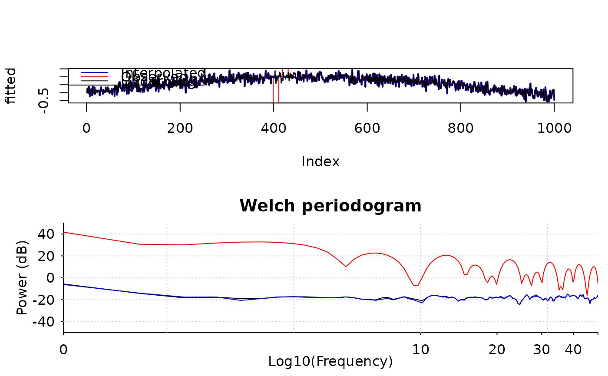

Find and interpolate stimulation signals
Usage
interpolate_stimulation(
x,
sample_rate,
duration = 40/sample_rate,
ord = 4L,
nknots = 100,
nsd = 1,
nstim = NULL,
regularization = 0.5
)Arguments
- x
numerical vector representing a analog signal
- sample_rate
sampling frequency
- duration
time in second: duration of interpolation
- ord
spline order, default is 4
- nknots
a rough number of knots to use, default is 100
- nsd
number of standard deviation to detect stimulation signals, default is 1
- nstim
number of stimulation pulses, default is to auto-detect
- regularization
regularization parameter in case of inverting singular matrices, default is 0.5
Examples
x0 <- rnorm(1000) / 5 + sin(1:1000 / 300)
# Simulates pulase signals
x <- x0
x[400:410] <- -100
x[420:430] <- 100
fitted <- interpolate_stimulation(x, 100, duration = 0.3, nknots = 10, nsd = 2)
oldpar <- par(mfrow = c(2, 1))
plot(fitted, type = 'l', col = 'blue', lwd = 2)
lines(x, col = 'red')
lines(x0, col = 'black')
legend("topleft", c("Interpolated", "Observed", "Underlying"),
lty = 1, col = c("blue", "red", "black"))
pwelch(x0, 100, 200, 100, plot = 1, col = 'black', ylim = c(-50, 50))
pwelch(x, 100, 200, 100, plot = 2, col = 'red')
pwelch(fitted, 100, 200, 100, plot = 2, col = 'blue')

par(oldpar)